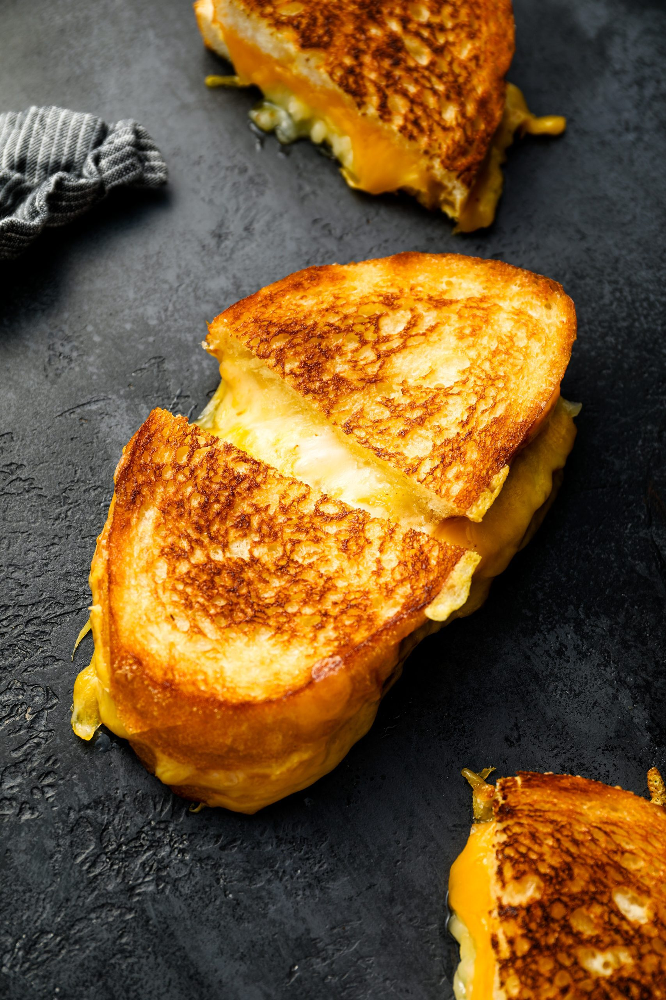

Grilled Cheese

Description
Indulge in the comforting delight of a perfectly crisp and gooey grilled cheese sandwich.
Start with two slices of your favorite bread, buttered generously on the outside to achieve a golden, crunchy crust.
Inside, layer slices of rich, melty cheese—cheddar, American, or a blend for extra flavor and texture.
Heat a skillet over medium-low heat and cook the sandwich, pressing it lightly,
until both sides are beautifully browned and the cheese is irresistibly melted.
The result? A warm, cheesy, and satisfying treat that's ideal for any time of day.
ingredients
- 2 slices of bread (your choice of the type!)
- 2-3 slices of a mix cheese (a misex of cheddar, mozzerella, and parmesan cheese is recommended
- 2 tbsp butter
Steps
- Preheat a non-stick skillet or griddle over medium-low heat.
- Spread butter evenly on one side of each slice of bread.
- Place one slice of bread, buttered side down, on a clean surface.
- Layer the cheese slices on top of the bread. If using additional ingrediants such as tomato, add it on top of the cheese.
- Top with the second slice of bread, buttered side up.
- Place the assembled sandwich in the skillet. Cook for 2-4 minutes, or until the bottom is golden brown and crispy.
- Carefully flip the sandwich and cook the other side for another 2-4 minutes, or until it's also golden brown and the cheese is melted.
- Remove the sandwich from the skillet and let it rest for a minute before cutting. This helps the cheese set slightly and makes it easier to cut.
- Cut in half and enjoy!